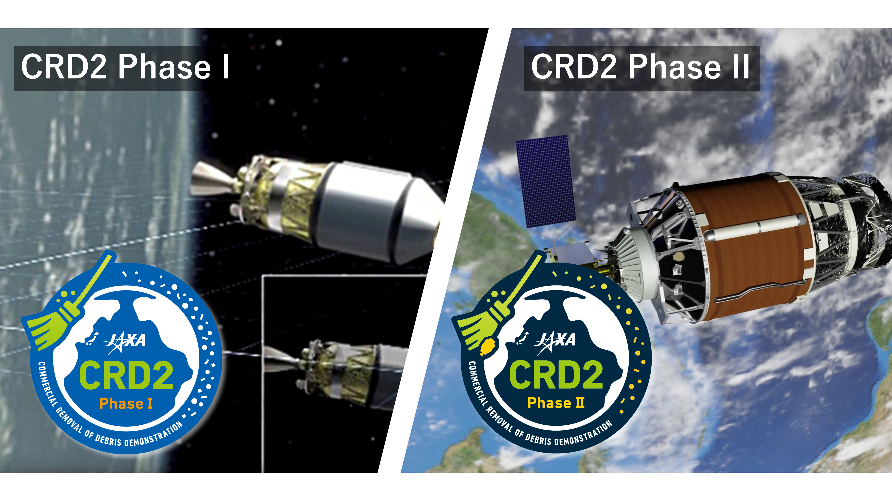
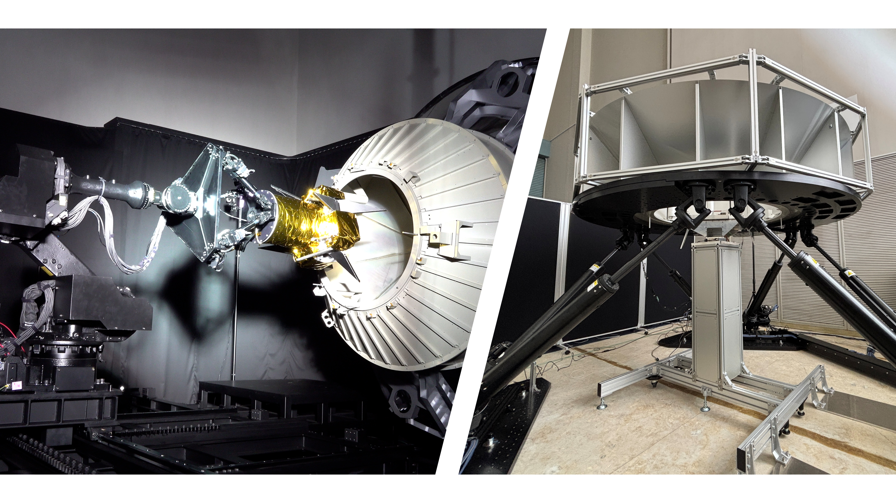
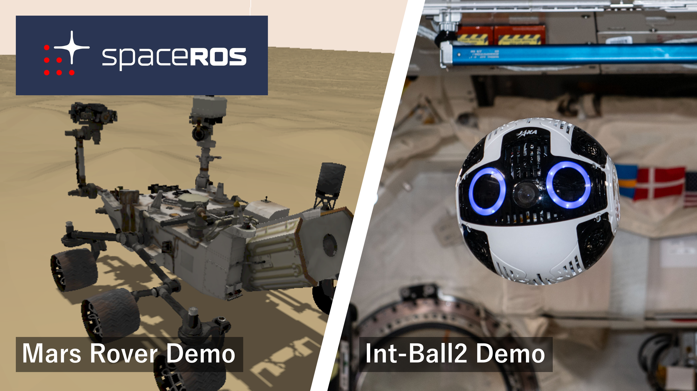
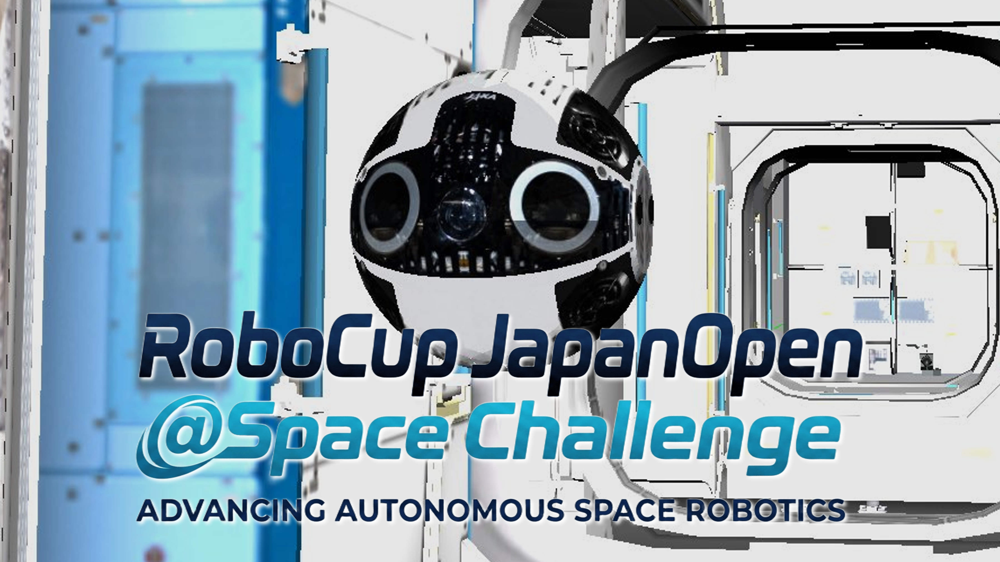
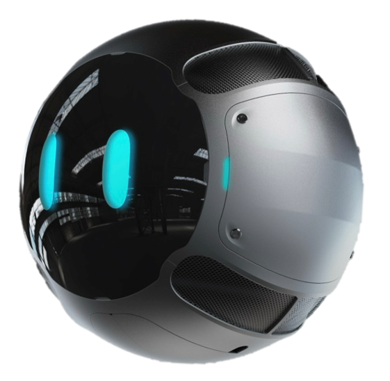
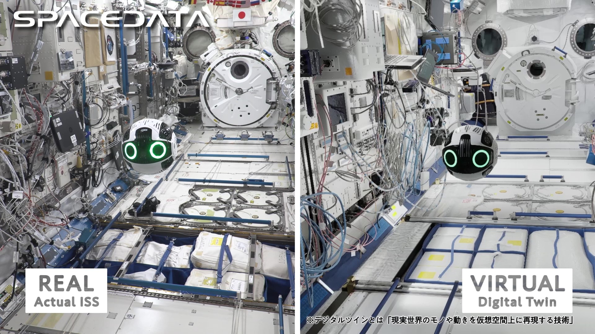
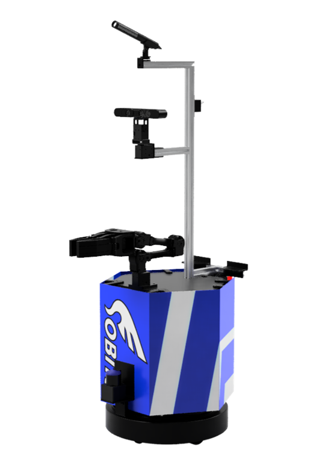
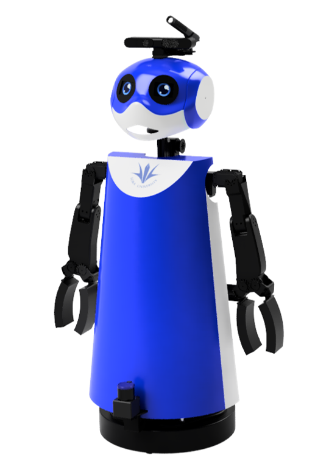
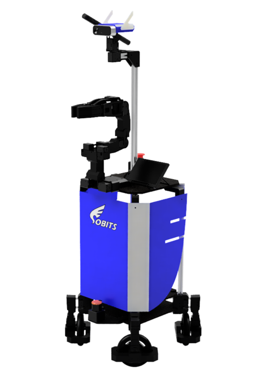
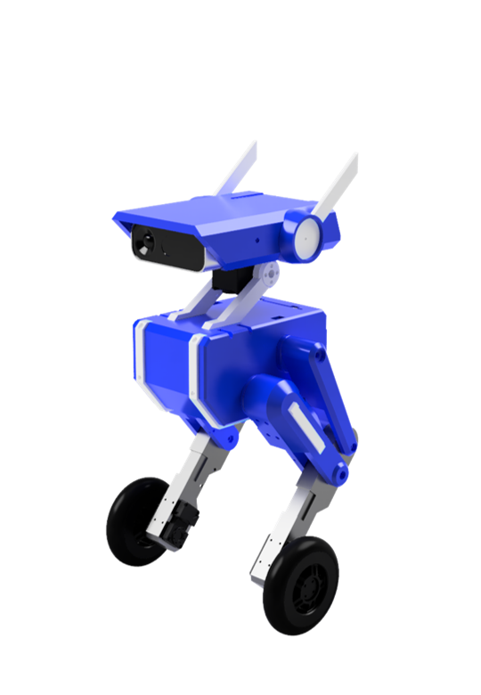

Space Robotics
Autonomous robotic systems for crewed and uncrewed space operations.
RESEARCHER · ROBOTICS ENGINEER
Space × AI × Robotics
Developing robotic systems that autonomously perceive,
make decisions, and act in space environments.
01 / ABOUT
Drawing on my experience in terrestrial intelligent robotics, particularly service robots, and in space robotics research and development since joining JAXA, I work to connect these two fields. My research focuses on bringing intelligent robotics to space applications.
This site presents selected research topics, development projects, and research outputs.
02 / RESEARCH
Autonomous robotic systems for crewed and uncrewed space operations.
Intelligent robots that acquire and develop capabilities through interaction with people and their environment.
Autonomous robotics technologies integrating perception, planning, control, and learning.
Natural communication and collaboration between humans and robots.
03 / PROJECTS
2023–Present

DEBRIS REMOVAL
Research and development related to the Commercial Debris Removal Demonstration (CRD2).

SIMULATION & DYNAMICS
Research and development related to SATDyn and C2Dyn simulation and experimental systems for space robotics.

ROBOT SOFTWARE
Research and development related to Space ROS for space robotics.

ROBOT COMPETITION
A space-robotics competition and benchmark connecting terrestrial AI and robotics research with future orbital robotic operations.
2024–2026

FREE-FLYING ROBOT
Q is an AI-powered autonomous robot for use inside space stations. It flies freely through the cabin using built-in propellers. It was developed to support astronauts by reducing their workload and lowering the operational costs of their activities.

DIGITAL TWIN
An in-orbit demonstration using JAXA’s Int-Ball2 was conducted to develop the digital twin technology needed for Q. The robot’s motion aboard the ISS (left) was compared with its motion in the simulator (right) as part of this demonstration.
2017–2023

SOBITS / SOKA UNIVERSITY
SOBIT EDU is an AI-powered autonomous service robot. It combines object recognition and manipulation with autonomous navigation and natural communication, bringing together fundamental capabilities for helping people in their everyday lives.

SOBITS / SOKA UNIVERSITY
SOBIT MINI is an AI-powered autonomous service robot. Developed for everyday assistance and an approachable appearance, it features carefully designed head and body shapes, along with expressive behaviors such as blinking.

SOBITS / SOKA UNIVERSITY
SOBIT PRO is an AI-powered autonomous service robot. Addressing limitations of EDU and MINI, it combines omnidirectional mobility and an expanded grasping range with a gripper-mounted RGB-D camera for improved perception.

SOBITS / SOKA UNIVERSITY
SOBY is an AI-powered autonomous robot with two legs and two wheels. Its charming design explores how simply being nearby, even without performing tasks, can offer companionship and help robots support people.
04 / PUBLICATIONS
Last synced: 2026-09-21 (UTC) · researchmap ↗
1 shown / 1 public records
Yuki Ikeda, Yongwoon Choi · Soka University Master's Thesis · 2023-03
10 shown / 28 public records
Taisei Nishishita, Yuki Ikeda, Akihiko Honda, Yoshinobu Hagiwara, Hiroyuki Okada · 44th Annual Conference of the Robotics Society of Japan · 2026-09-03
Keith Valentin Cardenas, Fumiya Ono, Koshiro Suzuki, Yusaku Hanajima, Jiahao Sim, Junho Lee, Taro Tsukada, Kenta Sato, Yuki Ikeda, Yoshinobu Hagiwara, Yongwoon Choi · 44th Annual Conference of the Robotics Society of Japan · 2026-09-02
Yuki Ikeda, Yoshinobu Hagiwara, Taisei Nishishita, Akihiko Honda, Hiroyuki Okada · 44th Annual Conference of the Robotics Society of Japan · 2026-09-02
Yuki Ikeda, Hiroyuki Okamoto, Taisei Nishishita, Hiroki Kato · ROSCon JP 2026 · 2026-08-04
Yuki Ikeda · Kayamori Foundation of Informational Science Advancement 30th Anniversary RoboCup Workshop · 2026-02-28
Yuki Ikeda · The 13th Intelligent Home Robotics Workshop · 2025-12-14
Taisei Nishishita, Yuki Ikeda, Seiko Piotr Yamaguchi · International Conference on Space Robotics 2025 Workshop · 2025-12-04
Yuki Ikeda, Taisei Nishishita, Hiroki Kato · International Conference on Space Robotics 2025 Workshop · 2025-12-04
Hiroyuki Okamoto, Yuki Ikeda · The 69th Space Science and Technology Conference · 2025-11-28
Yuki Ikeda, Keith Valentin, Yu Ozawa, Tori Shimizu, Koshiro Suzuki, Tsuyoshi Ito · The 69th Space Science and Technology Conference · 2025-11-25
05 / CAREER
Last synced: 2026-09-21 (UTC) · researchmap ↗